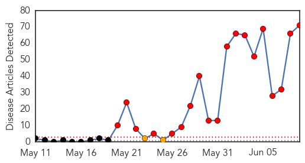
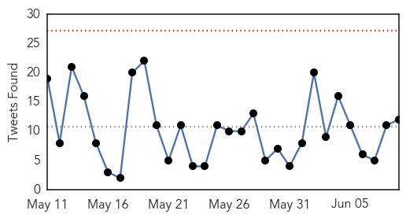

MERS
30-Day Web Trend
19 alerts, 2 warnings

30-Day Twitter Trend
14 alerts, 0 warnings
Article Locations
Article Confidences

Top Articles:
- 1.000
- Does MERS Pose a Threat in the US?
- 1.000
- What is MERS? What you need to know
- 1.000
- (6th LD) S. Korea reports seventh MERS death, 8 new cases
- 1.000
- Govt asks S Korea, Middle East bound workers to take precaution
- 1.000
- (6th LD) S. Korea reports seventh MERS death, 8 new cases
- 1.000
- (5th LD) S. Korea reports seventh MERS death, 8 new cases
- 0.999
- S'pore steps up precautionary measures against MERS
- 0.999
- South Korean MERS outbreak spotlights lack of research
- 0.999
- Is Coronavirus As Scary As It's Made Out To Be?
- 0.999
- Virus Specialists Probe South Korea’s Deadly MERS-CoV Outbreak
- 0.999
- 6th person dies of MERS virus in South Korea
- 0.999
- Should you be worried about MERS?
- 0.999
- (4th LD) S. Korea reports seventh MERS death, 8 new cases
- 0.998
- Vietnam’s first suspected MERS CoV case tests negative
- 0.998
- Floridians traveling to South Korea pay heed to MERS outbreak
- 0.998
- South Korea reports 8 more MERS cases, 1 fatal
- 0.998
- Hong Kong issues red alert against travel to South Korea amid MERS outbreak
- 0.997
- First Korean teen MERS patient confirmed, news, Health News, AsiaOne YourHealth
- 0.997
- SGGP English Edition- MOH convenes online meeting on MERS
- 0.997
- Mers outbreak: Hong Kong warns against S Korea travel
- 0.997
- Mers outbreak: Hong Kong warns against S Korea travel
- 0.996
- 800 screened for MERS since 2013 - Nation
- 0.996
- Does Middle East Respiratory Syndrome pose risk to Ramadan pilgrims?
- 0.996
- Should you be worried about MERS?
- 0.996
- Vietnam launches action plan against MERS - Xinhua
- 0.996
- New SARS virus believed to have killed at least one
- 0.995
- South Korea says its deadly MERS outbreak may have peaked
- 0.995
- South Korea MERS Virus Outbreak 2015 Updates
- 0.995
- Mers outbreak: Don't drink potentially fatal camel urine, WHO warns
- 0.994
- Hong Kong Issues South Korea Travel Advisory Due to MERS
- 0.994
- Ministry of Public Health Monitoring WHO Mission related to MERS-CoV Outbreak in South Korea
- 0.994
- HCM City acts to ward off threat of MERS epidemic
- 0.992
- Hong Kong issues travel alert on S. Korea amid MERS outbreak
- 0.992
- KUNA : Hong Kong issues travel alert on S. Korea amid MERS outbreak
- 0.992
- Pregnant woman with MERS gives birth by emergency C-section
- 0.992
- Update on number of suspected MERS cases
- 0.991
- PHE and NaTHNaC outline the latest health and travel advice for Hajj and Umrah pilgrims. - News Press Release
- 0.991
- China's first MERS patient in stable condition - Xinhua
- 0.991
- Korean doctors who treated MERS-CoV patient visited PH
- 0.990
- National scene: RI issues ‘travel advisory’ on S. Korea
- 0.990
- Nine New Cases of MERS-CoV in the Republic of Korea are Reported to WHO
- 0.988
- Korean doctors who treated MERS victim were here, but Philippines still free of disease
- 0.987
- Hong Kong issues travel warning over Mers virus
- 0.986
- Singapore beefs up precautionary measures against MERS
- 0.986
- Singapore beefs up precautionary measures against MERS
- 0.986
- MERS Disease Outbreak Hits South Korea Economy
- 0.985
- MERS cases near 100 in South Korea as experts say outbreak may have peaked
- 0.980
- No MERS-Cov in the country, assures DOH
- 0.980
- NAIA on heightened alert following Mers-Cov
- 0.974
- S. Koreans quarantined for MERS in Hong Kong, China to be released
Showing top 50 articles...
Top Tweets:
- 0.720
- 14 on here died 1d after symptoms develop.? WHO | Middle East respiratory syndrome coronavirus (MERS-CoV) – Korea http://t.co/cFAAFP1hz6
Ebola
30-Day Web Trend
0 alerts, 0 warnings

30-Day Twitter Trend
0 alerts, 0 warnings

Article Locations

Article Confidences

Top Articles:
- 1.000
- MGH patient monitored for Ebola no longer suspected of having virus
- 1.000
- 4 lessons from Ebola wars
- 0.999
- Ebola virus didn't mutate into more dangerous strain
- 0.999
- Cases of Ebola recede in West Africa, but fears of recurrence remain
- 0.999
- MERS death toll reaches seven; Hong Kong issues red-alert travel to South Korea
- 0.999
- Ebola crisis: UN's Ebola mission HQ in Ghana to close
- 0.997
- Labor calls for inquiry into Australia's response to Ebola crisis in West Africa
- 0.996
- Indian Woman Being Treated in U.S. for Drug-Resistant Tuberculosis
- 0.996
- Researcher helps discover Ebola virus in eye fluid of recovered survivor
- 0.995
- Hospital clears traveler who was monitored for possible Ebola
- 0.993
- Preventing the next global pandemic
- 0.992
- SA researcher helps discover ebola virus in eye fluid of recovered survivor
- 0.992
- Flinders News> Blog Archive > SA researcher helps discover ebola virus in eye fluid of recovered survivor
- 0.986
- No Ghanaian should be a guinea pig for Ebola experiments
- 0.985
- To Help Contain the Spread of Ebola in Sub-region Liberia National Red Cross Intervenes in Sierra Leone Ebola Fight
- 0.982
- UN praises Ghana for hosting Ebola response mission during outbreak -
- 0.981
- Why Mers doesn't stand a chance in drama-loving Philippines, Asia News & Top Stories
- 0.973
- Labor, Greens question Australia's Ebola response
- 0.973
- Labor, Greens question Australia's Ebola response
- 0.971
- Toronto Star by Dr. Sarilee Kahn, Assistant Professor of Social Work at McGill University
- 0.962
- S/Leone: NGO coalition wins international award
- 0.946
- Students Paid For Ebola Drugs Trial – Daily Guide Ghana
- 0.943
- Last year's Ebola strain weaker than that of 1976: study
- 0.931
- Health Adviser Presents Medical Supplies and Equipment to Hospitals
- 0.927
- Last year's Ebola strain weaker than that of 1976: study
- 0.917
- Liberia, Guinea Hold Cross Border Ebola Surveillance Dialogue
- 0.916
- Statement at the Opening of SLAJ 2015 AGM Protocols « Awoko Newspaper
- 0.913
- NDC Kicks Against Ebola Vaccine
- 0.913
- “The threat of another outbreak from a vaccine preventable disease is real” : Health Minister warns
- 0.879
- Perencevich on infection control in South Korea's MERS outbreak
- 0.868
- Could an Ebola Treatment Already Exist?
- 0.844
- 48th CBRN Brigade completes Ebola mission in Liberia
- 0.821
- United Nations World Food Programme - Fighting Hunger Worldwide
- 0.799
- SAVSU® Technologies' specialized shipping container used in Ebola vaccine clinical trials by the World Health Organization
- 0.777
- SAVSU® Technologies' specialized shipping container used in Ebola... -- SANTA FE, New Mexico, June 9, 2015 /PR Newswire India/ --
- 0.733
- EU rehabilitates 10 Peripheral Health Units « Awoko Newspaper
- 0.702
- Exclusive: Coulter Hammers Obama Administration For Hiding Identity, Immigration Status Of Foreigner Who Brought In Extreme Tuberculosis
- 0.695
- Pres. Sirleaf congratulates Sweden
- 0.684
- gods of Klefe not responsible for strange deaths
- 0.668
- Sierra Leone Foundation for New Democracy Kick-off
- 0.637
- Praise for South West service men and women involved in fight against Ebola
- 0.603
- Ebola crisis: UN's Ebola mission HQ in Ghana to close - Panorama
- 0.582
- Immunising Every Child is our Investment VP Foh
- 0.510
- (LEAD) N. Korea unlikely to close Kaesong complex over wage row
Top Tweets:
- 0.908
- Cases of Ebola recede in West Africa but fears of recurrence remain - Los Angeles Times http://t.co/0s1qY69Oys ebola EVD
- 0.864
- Researcher helps discover Ebola virus in eye fluid of recovered survivor - Medical Xpress http://t.co/Gf3jqXpVFW ebola EVD
- 0.826
- Most of the jobs that are available now are Ebola-related. In Sierra Leone Graduating Under Ebola http://t.co/eJuuQwAGCC via
- 0.805
- Study: Ebola virus didn't mutate into more dangerous strain - USA TODAY http://t.co/8pJSEK7tr2 ebola EVD
- 0.743
- Just In: Boston patient monitored for possible Ebola virus - Boston Herald http://t.co/sAi0RYEoKr ebola EVD
- 0.657
- Sierra Leone fieldpost: 'I believe Ebola victims deserve respect to the grave' - The Guardian http://t.co/3zXRFAKri2 ebola EVD
- 0.649
- Could an Ebola Treatment Already Exist? - BU Today http://t.co/6LPcxOQTTI ebola EVD
- 0.605
- Does focus on Ebola miss other deadly diseases? - Futurity: Research News http://t.co/NZWqfdvSZp ebola EVD
- 0.534
- 30 times fewer people are being diagnosed with Ebola each week than in September last year. EbolaResponse
- 0.532
- Here's the Difference Between MERS and Ebola - TIME http://t.co/GqFAV2bigV ebola EVD
- 0.522
- How Louise Troh Survived Ebola - KERA News http://t.co/fL141ssDe2 ebola EVD
- 0.516
- Patient at MGH being monitored for possible Ebola - My Fox Boston http://t.co/I6MMpgtBry ebola EVD